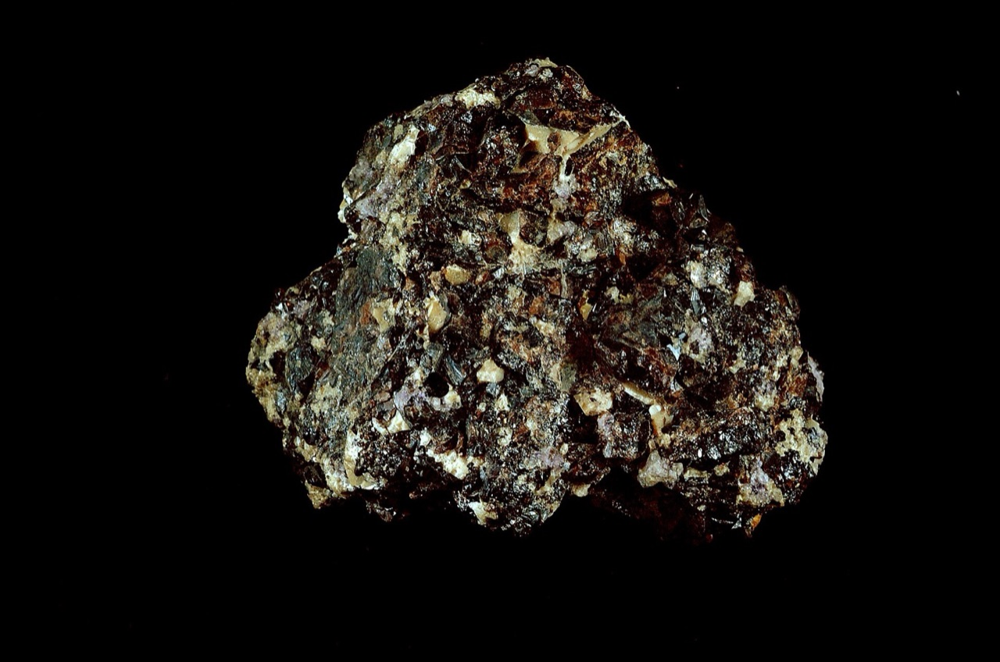
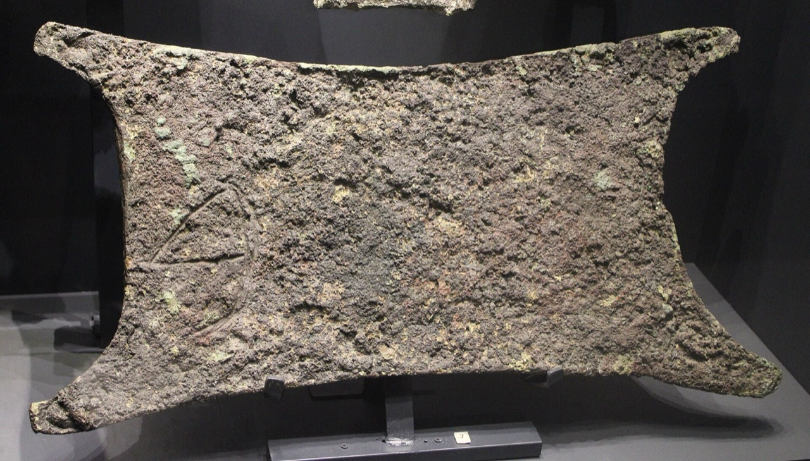
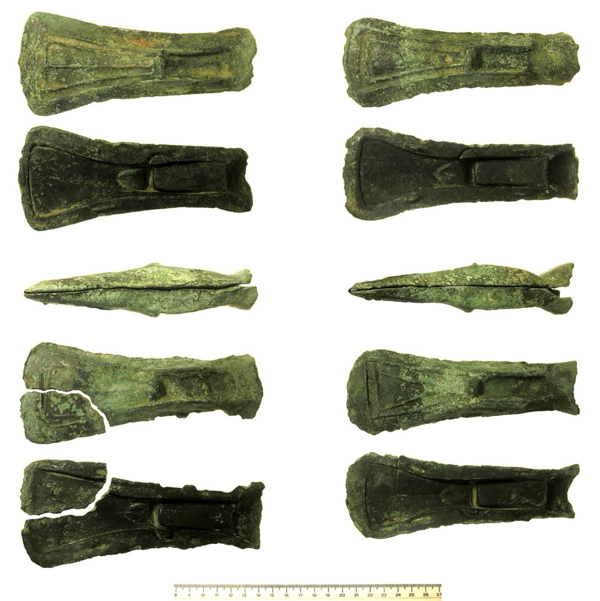
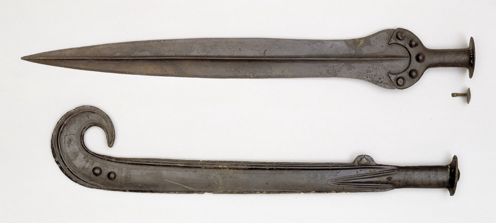
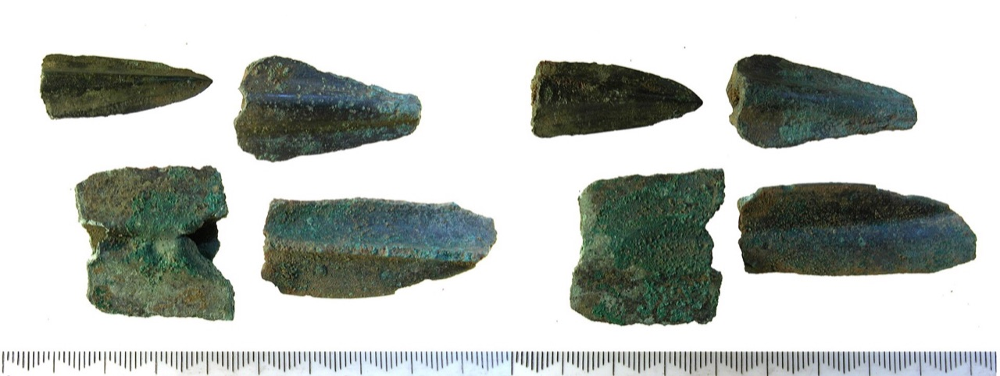

Two soft metals, one harder mixture
Chapter three left a problem. Copper could be cast into a shape, but the casting was soft. Gas holes made a clean casting hard to get. Some copper came out harder and paler. Its ore held arsenic, a substance that can enter copper and change its properties. Copper with this addition is called arsenical copper.
Arsenical copper was in use in Iran, eastern Anatolia and Mesopotamia in the fifth to fourth millennium BCE. It became widespread in the second half of the fourth millennium. At first, the arsenic most likely came with the ore. Later, it was sometimes added separately. At Norşuntepe in eastern Anatolia, slag without arsenic points to such adding. How often this was deliberate remains uncertain.
A little arsenic helps copper harden, especially under the hammer. Enough arsenic gives it a silvery sheen. Before or during casting, some arsenic leaves the liquid metal as vapour of its oxide, a compound with oxygen. Fumes of this kind from mining and ore processing have long been known to harm the nervous system, eyes, lungs and skin. Smiths did not have arsenic as a separate metal to measure out. Getting the same mixture each time was difficult.
Tin bronze has a very early, separate beginning. A thin piece from Pločnik in Serbia is at least as old as about 4650 BCE. It contains about 11.7 parts tin in a hundred parts of metal. In this chapter, parts and percentages of tin are by weight: ten parts tin in a hundred parts of metal by weight. The Pločnik metal came from ore that held both copper and tin. Its gold-like colour may have been the attraction. Such bronze then disappears from the finds for about 1500 years.
Regular tin bronze appears in Mesopotamia, Anatolia and western Iran in the late fourth to early third millennium BCE. Wide use begins in Mesopotamia around the middle of the third millennium; in Iran it comes later. The metal is harder than copper, often gold-coloured, and easier to cast. Tin itself melts at just 232 °C. The useful new metal comes from mixing two soft ones.
The Bronze Age, the period of a culture that made bronze or traded for it, began at different times in different places. For the Near East, about 3300–1200 BCE is a useful outline. In central Europe, it begins around 2300 BCE.
Erlitou has the earliest known large-scale metal production in the Central Plains of China. There is no agreed boundary for China's Bronze Age. Anyang was the capital of Shang China, about 1250–1046 BCE.
Tin bronze and arsenical copper remained in use together for a long time. In Anatolia, tin had replaced arsenic by the end of the Middle Bronze Age. Tin could be measured out, and its castings could be strong without hammering. These were likely reasons for the change. Whether poisoning also drove the change is disputed.
One person's tools make this uneven change easy to picture. Ötzi, the man whose body survived in Alpine ice, lived between 3359 and 3105 BCE. His axe was cast from almost pure copper and was not hardened by hammering. His knife had a stone blade. Among his listed belongings, the copper axe was the only metal object.
Bring the tin to the copper
A dark stone and a long road
The main tin ore is cassiterite, a dark, heavy stone. It can gather in stream beds. It may first have caught people's attention while they washed gravel for gold. This is a suggestion, not a known discovery.

Dark cassiterite crystals with pale stone between them. This sample belongs to the University of North Dakota's geology collection. Its place of origin is unknown.
Photo: Shannon Heinle (GeoDIL), CC0, Wikimedia Commons
.jpg){kind=link}
Tin is rare. The Earth's outer rock contains about 2 parts tin per million, against about 70 parts copper. Most tin deposits lay far from the cities that needed bronze.
European tin districts include Cornwall and Devon, Brittany, Iberia and the Erzgebirge mountains. Tin was mined at Kestel in Anatolia during the third millennium BCE, though its exact dates are disputed. Central Asia also had ancient tin mines. Where the earliest Near Eastern tin came from is still unknown.
Around 1900 BCE, merchants carried tin from Assur to Kanesh in Anatolia on donkeys. Over 23000 clay tablets preserve this trading world. Estimates of the trade vary widely; one is about 110 tons of tin in thirty years. The records of one merchant, Šalim-ahum, describe 41 donkey-loads with 1 ton of tin and 425 textiles.
The ship wrecked at Uluburun, off today's Turkish coast, carried about 1 ton of tin around 1320 BCE, as much as that caravan, along with about 10 tons of copper. The metal travelled as ingots, cast blocks for storage and transport. This was enough for roughly 11 tons of bronze, close to the usual mixture of 9 parts copper to 1 part tin.

A copper ingot from the Uluburun wreck, now in the Bodrum Museum of Underwater Archaeology. Its four corners give it the outline of a stretched animal hide. A scratched mark is visible on the surface.
Photo: Zunkir, CC BY-SA 4.0, Wikimedia Commons

The origin of the ship's tin is disputed. Anatolia, Central Asia and Britain are among the proposed sources. No single route is settled.
Four ways to reach the mixture
Bronze can start with one ore that holds both metals. Or copper ore and cassiterite can be smelted together. A third route adds cassiterite to liquid copper under charcoal, which helps free the tin from its ore. The fourth starts with two metals: melt copper and tin together.
The Pločnik foil shows the first route. Finds from western Iran have been interpreted as evidence for smelting mixed ores. Adding tin ore to copper is also a proposed route for early bronze. By the Middle to Late Bronze Age, copper metal and tin metal were used together on a large scale. Separate metals let the smith control the amount of tin.
Melting the two metals
A charcoal fire, bellows and a crucible do the work. Copper can be melted first, with tin added shortly before the pour. Both metals can also be melted together. A cover of charcoal keeps air away from the liquid.
Most British Bronze Age swords analysed so far contain 7 to 14 parts tin. At one Late Bronze Age site in Austria, axes and chisels contain 7.5 to 10 parts, and knives 9 to 15. This was not one exact recipe followed by every smith. Bronze with about 10 parts tin is liquid at about 1000 °C, while copper needs 1085 °C. Tin also takes oxygen out of the liquid and helps it flow into the mould.
The picture below shows copper with more and more tin. Look at how the colour changes, where freezing starts and ends, and which mixtures were used for what.
Tin makes the folds harder to move
A few different atoms in the rows
In low-tin bronze, tin atoms take the places of some copper atoms. They share the same crystal rows. This is a solid solution: atoms of a second kind are scattered among those of the first. Think of sugar spread through tea, but with the mixture now solid and its atoms sitting in rows.
Ten parts tin by weight does not mean one tin atom in ten. A tin atom is heavier than a copper atom. With 10 parts tin by weight, about 1 atom in 18 is tin; with 5 parts, about 1 in 36. Each tin atom is a little bigger than a copper atom. One common measure gives sizes of 145 against 135 on the same scale, about seven hundredths larger. This measure is accurate only to about 5 units, so the difference of 10 is rough. Other ways of measuring give different sizes.
The larger atom squeezes the rows around it, pressing them closer together. There is a limit to how well different atoms fit: a size difference greater than about 15 in a hundred usually makes it hard for many of them to share the same rows.
Recall the folds from chapter one. A fold has squeezed rows on one side and stretched rows on the other. On the stretched side there is more room, so a larger atom fits with less squeezing. The atom and fold sit comfortably together. A fold that reaches such a place tends to stay there. Pulling it away needs more force than moving it through plain copper.
The tin atom attracts the fold to a comfortable position. It is not a wall across its path. Smaller atoms can hold folds too, on the squeezed side. The foreign atom also differs from copper in stiffness, how strongly a material resists being deformed. This adds to the effect. More added atoms mean more hardening, up to the limit of what the rows can hold.
Below, try a light blow on pure copper, then on copper with tin atoms. Watch which folds pass through and which stay held; then try a harder blow.
Hard before the first hammer blow
Bronze already has extra hardness before any hammering. Tin in the rows already makes moving folds harder. Hammering then adds work hardening: more folds form and hinder each other, as in chapter one.
The Brinell scale is a way to measure hardness; larger numbers mean harder metal. After annealing, bronze with 1 part tin measures 50, and bronze with 8 parts measures 82. After working each to half its thickness, the values are 110 and 195. Tin raises both the starting hardness and the hardness reached by working.
The Vickers scale is another hardness scale. Its numbers are roughly similar to Brinell numbers, but not exactly the same. On this scale, cast copper measures 40–50, and cold-worked copper 100–120. Fully worked bronze with 12 parts tin reaches 220. Tin itself measures only 6–10. Comparing results across the two scales is difficult.
Arsenic also helps hammered copper become harder. But above about 3 parts arsenic, adding more makes little difference to this hardening. More tin keeps adding hardness over the measured range.
When the rows cannot hold it all
Copper can hold only a limited amount of tin in its rows. The theoretical limit is about 17 parts tin, but the practical limit is nearer 14. Castings rarely hold even that much evenly. Extra tin can join copper in a different crystal: the delta phase, a hard, brittle compound with about a third tin by weight.
Much of this compound makes bronze break under the hammer. Between 17 and 19 parts tin, bronze can be worked neither hot nor cold. Above 19 parts, hot working becomes possible again. Ancient bells and mirrors often used 20–25 parts tin, with 2 to 10 parts lead and the rest copper. These objects were almost always cast.
A casting does not freeze all at once
Pure copper freezes at 1085 °C. Bronze freezes over a range of temperatures. With about 10 parts tin, the first crystals appear near 1000 °C. Modern alloys of this kind lose their last liquid around 831–843 °C, roughly one hundred and sixty degrees below the start.
The first crystals contain less tin than the liquid around them. As their branches grow, each new layer holds more tin. The liquid left between the branches becomes richer still. This unevenness is called coring: a crystal has a copper-rich centre and a tin-richer outside. Cooling is too quick for the tin to spread evenly through the solid.
The last liquid fills the gaps between branches. As the casting cools further, this tin-rich filling becomes a mixture containing the hard, brittle compound. It commonly remains even in bronze with only 10 parts tin. Proper annealing of bronze with up to about 14 parts tin lets the tin spread through the grains and removes this brittle filling.
Follow the casting below as it cools. Compare its falling temperature with copper's flat stretch, then anneal it and watch the tin spread out.

A cut and polished piece of bell bronze under a microscope. The large crystals branch like trees. Chemical treatment makes the structure visible and produces these colours; they are not the metal's own colour. The stated magnification is 200:1.
Photo: Eisenbeisser, CC BY-SA 3.0, Wikimedia Commons

Polished bronze has a different colour story. Copper is red. Around 5 parts tin it becomes pale pink; from about 8 to 20 parts, yellow dominates. More tin makes it paler, with a silvery appearance near 30 parts. Colour changes with the mixture, just as hardness and workability do.
How to make and work bronze well
A useful blade needs more than a hard mixture. It must fill its mould, survive hammering and keep a hard cutting edge.
Six bronze recipes
The earliest known written Chinese set of bronze recipes appears in a Chinese text on crafts called Kaogong ji. The recipes were written down around 300 BCE, several centuries after the Shang. The terms jin and xi name two ingredients mixed for casting. Six recipes set out mixtures for different objects:
- Bells and cauldrons: divide the jin into six parts; xi occupies one.
- Axes for cutting and shaping wood: divide the jin into five parts; xi occupies one.
- Blades on long shafts: divide the jin into four parts; xi occupies one.
- Large blades: divide the jin into three parts; xi occupies one.
- Knives and arrowheads: divide the jin into five parts; xi occupies two.
- Mirrors: jin and xi, half.
The names were long taken to mean pure copper and pure tin. That reading is now disputed: both ingredients may have been prepared alloys. Analyses suggest that Shang casters at Anyang mixed three fairly pure metals: copper, tin and lead, a very soft metal. These six recipes use two ingredients, possibly prepared alloys. When the practice changed remains an open question.
Choose and protect the mixture
- Match the mixture to the job. Most analysed British Bronze Age swords contain 7 to 14 parts tin; knives from one Late Bronze Age site in Austria contain 9 to 15. More tin adds hardness, but too much makes brittle material that can crack. A mixture suitable for a cast bell may be useless for a cold-hammered blade.
- Weigh the separate metals. Tin metal lets the smith set the mixture instead of depending on what the ore happens to contain. This control was a likely advantage over arsenical copper.
- Keep lead out of a blade. Lead is a very soft metal. It does not dissolve in copper's rows and tends to gather between the grains, weakening the blade. It can help liquid metal fill a mould, which makes it useful in other castings.
- Keep the liquid under charcoal. The cover keeps air away. In a separate experiment, eight remelts in a charcoal furnace lost no measurable tin, even with the crucible on top of the charcoal and the bellows blowing at it. The burning charcoal itself left too little free oxygen around the crucible. In an electric furnace with air available, tin was lost as it reacted with oxygen. Reusing bronze does not have to mean losing its tin.
Help the metal fill the mould
Another casting rule was to watch the colour of the fumes. Dark fumes give way to yellow-white, then blue-white, then blue or green. The word in the last two colour names can mean either blue or green. The metal is then ready to pour.
- Pour hot enough, but not too hot. About 1100 °C was used for a mixture with 10 parts tin in casting experiments. Too little heat lets the metal freeze before filling the shape. Too much heat can leave gas holes.
- Choose a mould that takes the heat. Moulds were made from stone, clay and bronze. Fine-grained stone that resists sudden heating is useful. The two halves must fit closely. In one experiment, most of the bronze escaped through a small gap between them.
- Dry and warm the mould. Moisture can make gas holes. Warming helps keep metal from freezing in narrow parts, but experimenters do not agree that it always helps: one group later got better castings in unheated moulds. Soot on a stone mould helped the casting come away. On a bronze mould, a coating of ground charcoal, animal fat and ash kept the poured metal from welding to the mould.
- Hold a hollow's centre in place. A core is a piece placed inside a mould to keep metal out of a space. A clay core can make a socket, the hollow where a wooden handle fits. It must stay in place while metal flows around it. It must also let gas escape, or holes can form around it.

Two bronze moulds for axes with loops, found in Norfolk, England, and dated to 1400–1100 BCE. Each mould has two halves. The photographs show the axe-shaped hollows, the outer faces and the halves fitted together.
Photo: Suffolk County Council / Faye Minter, CC BY-SA 4.0, Wikimedia Commons
.jpg){kind=link}
Having the right shape is not enough. In one experiment, all twelve clay moulds for socketed axes gave castings full of gas holes. The metal looked like cheese full of holes. The experimenter suspected too little venting, clay walls that were too thick and not porous enough for gas to escape, and inexperience.

Bronze being poured into prepared moulds at a modern art foundry in Munich. The bright stream enters the opening above a mould. The furnace glows behind it.
Photo: Kritzolina, CC BY-SA 4.0, Wikimedia Commons

Leave the edge hard
- Hammer, anneal, then hammer again. Cold hammering hardens the cutting edge. Annealing makes further shaping possible. Finish with cold hammering where hardness is wanted. The edge ends up harder than the rest of the blade.
- Give annealing enough heat and time. Copper alloys are commonly annealed at 500–800 °C. Below about 520 °C, the brittle filling can survive. A short heating at a higher temperature may also leave some of it. The structure of early Balkan tin bronzes led researchers to conclude that their makers annealed them hotter than copper. They had learned that the new metal needed different treatment.
- Stop before cracks appear. Too much hammering cracks the metal. Annealing can grow new grains, but it cannot close these cracks. Ancient smiths seem to have stopped when an edge was hard enough, rather than seeking the highest possible hardness.
- Remove the casting seams and finish the surface. The ridges left where mould halves meet and the stubs where metal entered were removed by hammering and polishing. The edge was sharpened.
In one study of Late Bronze Age tools from eastern Austria, dated to about 1080–800 BCE, the edges of axes, chisels and a pickaxe measured 215–300 on the Vickers scale. A knife annealed as its last treatment measured 145 or less. Belt clips, which needed to bend, were left annealed. For a modern sheet of bronze with 12 parts tin, the values were 139 as cast, 137 after annealing and 164 after cold working. The mixture alone does not set the final hardness.
In the model below, hammer the axe's edge and watch where it hardens. Try annealing between rounds of hammering, then choose which treatment should come last.
Heat and fumes still bring danger
Before or during casting, arsenic leaves liquid metal as vapour of its oxide. Such fumes from mining and ore processing are known to harm the nervous system, eyes, lungs and skin. Water meeting liquid metal can turn suddenly to steam and throw the hot liquid metal about. The charcoal fire also brings the carbon monoxide danger from chapter three. Better metal does not remove the dangers of the fire.
A better blade, a longer supply line
Bronze gives a more fluid melt, allowing more complex shapes to be cast in closed moulds. It gave masters the chance to start mass production. Stone moulds made in two halves are known from the Middle and Late Bronze Age. Axes gained holes and sockets for handles. Daggers were joined by long swords.
The first blades clearly classed as swords come from Minoan Crete around 1700 BCE. Some were more than 100 cm long. Earlier sword-like blades from Arslantepe were made of arsenical copper, not tin bronze.

Two Bronze Age swords from Denmark. One is straight; the other curves strongly. The curved sword was cast in one piece; the find is described as an offering or deposit of the older Bronze Age.
Photo: John Lee, Nationalmuseet (Denmark), CC BY-SA 2.5, Wikimedia Commons

Casting also made much larger objects possible. The Houmuwu ding, a ceremonial vessel from Anyang, weighs 832.84 kg. It is described as the heaviest surviving piece of ancient bronzeware.

Bronze bells from the late Shang period, the thirteenth to eleventh centuries BCE. They stand mouth upward. Raised faces decorate their sides. They are displayed in the Palace Museum in Taipei.
Photo: Gary Todd, CC0, Wikimedia Commons

A smaller object, the Nebra sky disc, is about 30 cm across and weighs 2.2 kg. It is tin bronze, with copper from the Mitterberg in Austria. Its burial is dated to about 1600 BCE. That dating has been challenged and defended.
Bronze could also store wealth. Buried groups of unused axes suggest that metal was kept for its value. Such a buried group is a hoard. Other hoards contain broken objects and casting waste. The composition of bronze objects also shows that old metal was remelted and mixed.

Four fragments from a hoard of 58 bronze pieces found in Suffolk, England. They date to 1150–800 BCE, after the chapter's main end date of 1200 BCE. Each fragment is shown from two sides.
Photo: Suffolk County Council Archaeology Service / Faye Minter, CC BY-SA 4.0, Wikimedia Commons
.jpg){kind=link}
The limit was now the supply of tin. For many cities, tools and weapons depended on a rare metal carried over thousands of kilometres. The workshop depended on roads, merchants and distant mines.
Around 1200 BCE, many societies of the eastern Mediterranean broke down. Proposed causes include drought, war, migration and failures within states; no single explanation is agreed. A break in the tin trade is one old explanation, but later analyses dispute it. Bronze did not simply become a worse metal. Bronze, with Vickers hardness values of 60–258, is generally harder than wrought iron, iron shaped by hammering rather than cast, at 30–80. The next chapter follows a different way to get a useful blade.